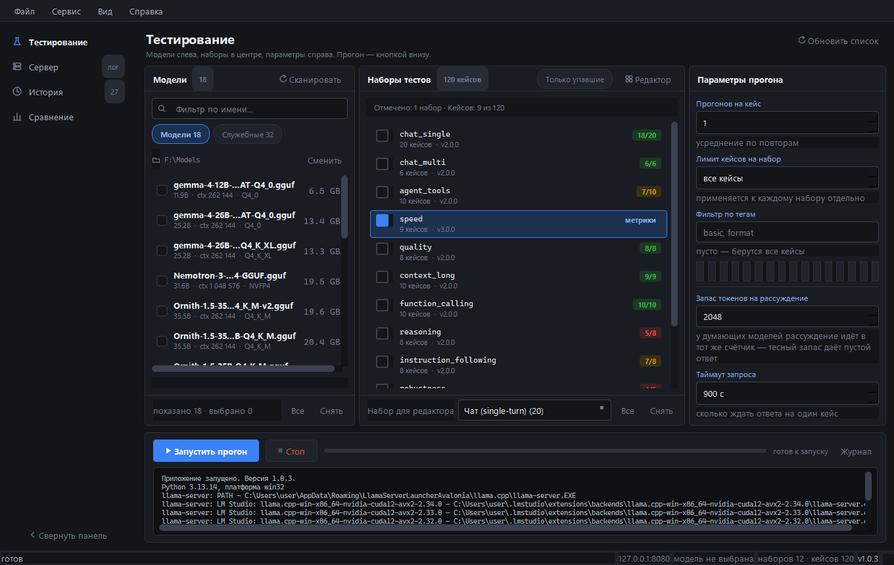

Числа вместо ощущений
Стенд для локальных GGUF-моделей: 12 наборов, 120 кейсов, скорость префилла, генерации и расход видеопамяти — в одном отчёте. Прогон сохраняется, модели сравниваются покейсово.

127.0.0.1:8080.
Проблема
Как выбирают модель сегодня
Три способа, и ни один не оставляет доказательств.
Скачал, потыкал, решил
Пять вопросов в чате — и вывод «вроде умная». Через неделю выясняется, что на арифметике в четыре шага она разваливается.
Два окна рядом
Сравнение на глаз: два чата, одни и те же вопросы, разница «в ощущении». Повторить этот опыт через месяц не получится.
Скрипт на коленке
Двадцать промптов в питоновском файле. Через месяц файла нет, модель обновилась, выводы — «мы вроде Qwen выбрали».
Как это работает
Три шага
От запущенной модели до отчёта — без настройки окружения.
Сервер уже работает
Модель загружена твоим лаунчером и отвечает на 127.0.0.1:8080. Стенд её видит и ничего не меняет в твоей среде.
Отмечаешь наборы
Двенадцать наборов: рассуждения, код, русский язык, скорость, вызов функций, устойчивость к мусору в промпте. Можно все, можно один, можно ограничить число кейсов.
Получаешь отчёт
Точность по каждому набору, tok/s префилла и генерации, TTFT, расход VRAM. HTML-отчёт, JSON, запись в историю — и сравнение с прошлыми прогонами.
Возможности
Шесть вещей, которых нет в чате
Каждая карточка — проверяемый факт, а не прилагательное.
Проверки по правилам
Судья-модель зовётся только там, где без неё нельзя. Результат не зависит от удачи.
Каждый провал виден целиком
Вопрос, ответ модели, разбор проверки. Не «7 из 10», а «вот три кейса, где сломалось».
Скорость и качество в одной таблице
Префилл, генерация, TTFT, latency — рядом с точностью по наборам.
Память модели
Сколько занимает, влезает ли в твою карту, что происходит с контекстом.
История и сравнение
Прогон целиком, а не файл. Сравнение покейсово и предупреждение, если версии наборов разные.
Отчёты для людей
HTML, тёмная и светлая темы, экспорт в CSV. Показать коллеге — не скриншот в чат.
Что показывают числа
Не «умная» или «тупая», а по пунктам
Метрики прогона — строки сводной таблицы. Лучшее значение помечается, различия видны сразу.
| Метрика | Зачем |
|---|---|
| Точность по набору | Где именно модель сильна, а где проваливается. |
| Tok/s префилла | Как быстро модель «читает» длинный промпт. |
| Tok/s генерации | Как быстро она пишет ответ. |
| TTFT | Сколько ждать первого токена. |
| VRAM | Влезет ли в карту вместе с контекстом. |
| Сбои стенда и пустые ответы | Отделить плохую модель от плохого прогона. |
Отстройка
Чем это не очередной бенчмарк
Инструменты ниже хорошие. Они просто отвечают на другие вопросы.
lm-evaluation-harness
Отвечает «насколько модель умна вообще» — на академических датасетах. Здесь — «как ведёт себя этот квант на твоей карте».
llama-bench
Меряет скорость. Отлично меряет. Но ничего не знает о качестве ответов.
Promptfoo
Тестирует промпты в приложении и живёт в CI. Здесь — сама модель и её железо.
LLM Test Bench
120 кейсов против твоей модели, качество и скорость в одном прогоне, воспроизводимо и покейсово.
Минута на посмотреть
Как это выглядит в движении
Видео грузится только по нажатию — чтобы страница открывалась быстро.
Скачать
Windows, бесплатно, MIT
Без регистрации, без ключа. Ставится за минуту.
Установщик
Обычная установка, ярлык в меню «Пуск». Версия 1.0.3.
Скачать MSI · 60 МБТребования: Windows 10/11 и работающий llama-server на 127.0.0.1:8080. Python не нужен — только если собираешь из исходников (3.13).
FAQ
Вопросы, которые задают первыми
Он поднимет свой сервер?
Нет. Стенд работает по HTTP с внешним llama-server. Модель загружает ваш лаунчер, стенд только отправляет запросы и читает ответы. Ваш конфиг он не трогает.
Linux или macOS?
Сейчас только Windows 10/11. Исходники открыты под MIT — если соберёшь под Linux, присылай pull request.
Нужен Python?
Нет, если берёшь .exe или MSI. Python 3.13 нужен только для сборки из исходников.
У меня 8 ГБ VRAM, хватит?
Наборы — это промпты, а не модели. Память занимает модель, которую ты уже держишь. Для слабых машин есть лимит кейсов на набор и запас токенов на рассуждение.
У меня LM Studio — он не помешает?
Наоборот: LM Studio поднимает сервер, стенд его тестирует. Стенд не конкурирует с лаунчером, он работает поверх него.
А кто проверял сами тесты?
Каждый кейс виден целиком: вопрос, ответ, разбор проверки. Наборы версионированы, проверки описаны. Нашёл плохой кейс — напиши в issues, это баг.
Это правда бесплатно?
Да. MIT, без регистрации и ключей. Сделано одним человеком.
Обратная связь
Нашёл плохой кейс или чего-то не хватает?
Пиши в issues — читаю всё сам. Для кейса хватит трёх вещей: вопрос, ожидаемый ответ и то, что ответила модель.
Нужен GitHub-аккаунт — другого способа написать нет. Зато ответ не теряется и видно, что проект живой.